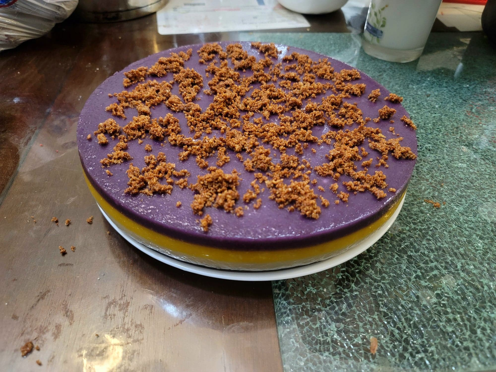

Sapin-Sapin

Ingredients:
- 4 cups (520 g) Glutinous rice flour
- 2 14 oz cans Coconut milk
- 1 1/2 cup (300 g) Sugar
- 1/2 cup Macapuno, optionally chopped
- 1/4 cup Jackfruit, minced
- 3-6 drops Langka extract, or to preference
- Optional: 3-6 drops Yellow food coloring
- 1/2 cup Ube halaya
- 1/4 tsp Ube extract, or to preference
- 1 batch Latik
Instructions:
- Prepare a very large steamer. Grease a 10" cake pan with coconut oil, preferably the coconut oil from making the latik.
- Combine the glutinous rice flour, coconut milk, and sugar into a large mixing bowl. Whisk together to combine until homogenous and there are no lumps.
- Divide the batter equally into 3 bowls. To one bowl, stir in the macapuno. To the second, stir in the jackfruit, langka extract, and yellow food coloring. To the third, stir in the ube halaya and ube extract.
- If using a spring-form pan and not flipping the sapin-sapin to remove it from the pan, start with the white macapuno layer. Otherwise, start with the ube layer. Pour the macapuno/ube batter into the greased cake pan. Transfer to the steamer and let steam for about 8 minutes. Then remove from the steamer and add the langka layer. Return to the steamer for another 8 minutes. Then remove from the steamer and add the final layer. Return to the steamer and steam for about 12-15 minutes, or until a toothpick inserted into the middle comes out clean.
- Remove it from the steamer. If using a spring-form pan, simply release it from the pan. Otherwise, run a thin, oiled knife along the sides of the pan. Flip it onto a serving plate and tap the pan to help it release.
- Top the sapin-sapin with latik. Serve immediately.